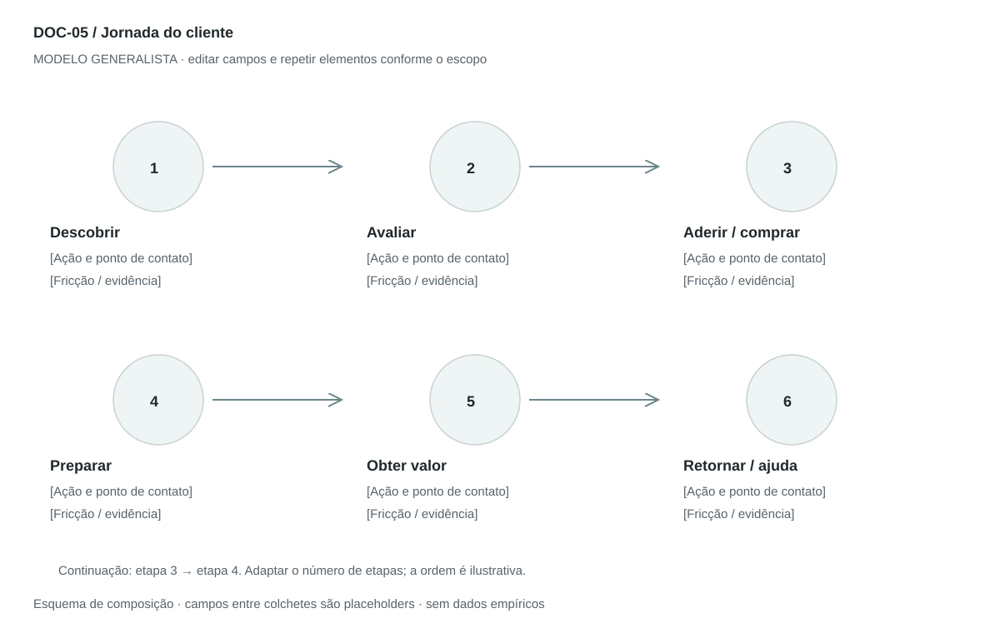

DOC-05 / Biblioteca documental generalista
Jornada do cliente
Mostrar as ações e pontos de contato da pessoa para alcançar um objetivo, incluindo fricções e oportunidades.
Modelo de investigação. Não representa uma análise concluída. Campos vazios devem permanecer identificados; não inventar dados para completar figuras.
Estrutura editorial
Uma prancha paisagem com 5–8 etapas por linha; quando houver retorno, numerar e usar setas sem ambiguidade. Anexo em tabela registra dados que não cabem no mapa.
Visual previsto

Ícone ou cena por etapa, ação e ponto de contato; setas mostram progressão e retorno. Curva emocional é opcional e só recebe números quando houver escala e observações.
Imagens: Uma cena por ação, com composição coerente; podem ser ícones originais. Se usar fotografia, variar contexto, não pessoa arbitrariamente; informar origem e licença. Sem QR codes funcionais ou dados pessoais.
Dicionário de dados
| Campo | Tipo | Dado necessário |
|---|
| etapa_id | referencia | Identificador compartilhado com blueprint e momentos da verdade |
| ordem | inteiro | Ordem ou ramo da ação |
| acao_cliente | texto | O que a pessoa tenta fazer |
| ponto_contato | texto | Canal, pessoa, espaço ou objeto |
| expectativa | texto | Resultado esperado na etapa |
| friccao | texto | Esforço, dúvida ou falha |
| emocao | texto | Sentimento com origem observada ou hipotética |
| metrica | texto | Tempo, conclusão, abandono ou outro indicador com denominador |
| oportunidade | texto | Mudança que pode melhorar a etapa |
Todos os registros precisam de classificação, fonte, localização, datas, confiança e limitação. Números também precisam de unidade, moeda quando aplicável e período.
Modelo preenchível
Os quadros amarelos podem ser editados nesta página para impressão. Edições não são gravadas automaticamente: use o Markdown/JSON para manter uma versão ou imprima em PDF após editar.
[Negócio] · [Versão] · [Data-base] · [Autor] · [Audiência] · [Território]
Pergunta decisória: [A preencher]
Escopo: [A preencher]
1. Recorte
Persona, objetivo, início, fim e cenário atual ou proposto.
[Análise + evidência + implicação + lacuna]
2. Sequência de ações
Liste ações em primeira pessoa, sem confundir ação do usuário com processo interno.
[Análise + evidência + implicação + lacuna]
3. Pontos de contato
Canal, pessoa ou objeto com que o cliente interage em cada etapa.
[Análise + evidência + implicação + lacuna]
4. Experiência
Expectativa, dúvida, fricção e sentimento observado ou hipotético.
[Análise + evidência + implicação + lacuna]
5. Oportunidades e indicadores
Associe melhoria, responsável e métrica a uma etapa.
[Análise + evidência + implicação + lacuna]
6. Exceções
Inclua abandono, retorno e ajuda, além do caminho ideal.
[Análise + evidência + implicação + lacuna]
Decisão e próximo passo
[Decisão e justificativa]
[Alternativa considerada]
[Condição de reversão]
[Ação, responsável, prazo e critério]
Fontes e limites
[Fonte + localização + datas + o que sustenta + limitações]
Critérios de revisão
- O título explicita se é jornada completa ou recorte.
- Nenhum sentimento é apresentado como pesquisa sem fonte.
- Etapas usam os mesmos IDs nos três mapas de experiência.
Estudo do arquivo original
DOC-05-fonte.pdf — Uma página em paisagem com oito imagens circulares, bordas escuras, sombras e setas curvas em percurso serpenteado. Legendas numeradas acompanham as ações. Retrata principalmente onboarding, terminando no registro; não documenta toda a relação nem mede emoções.
Observação do original e adaptação recomendada são camadas distintas. Nomes, preços, localidades, contatos e conclusões do caso-fonte não devem preencher a nova análise.